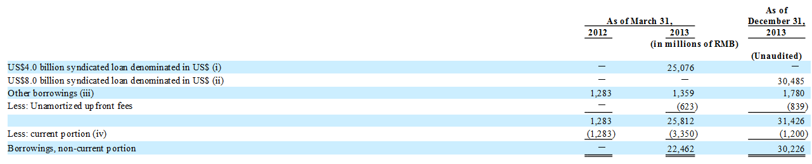

返回主页
Bank borrowings

(i) During the year ended March 31, 2013, the Company completed the drawdown of US$2.0 billion denominated in U.S. dollars under a facility agreement entered into with certain banks which are repayable over a three year period. Such amounts are borrowed at floating interest rates which range from LIBOR plus 3.0% to 4.5% per annum. During the same period, the Company completed another drawdown of US$2.0 billion denominated in U.S. dollars under another facility agreement entered into with certain banks, which are repayable over a four year period. Such amounts are borrowed at floating interest rates which range from LIBOR plus 3.3% to 4.8% per annum. As of March 31, 2013, such amounts are collateralized by certain equity interests in the Company’s major subsidiaries and the Company maintained a debt service reserve account collateralized in favor of the lenders in connection with these facilities (Note 11). The facilities were primarily used to finance the privatization of Alibaba.com Limited (Note 4(b)) and the Initial Repurchase (Note 4(a)) during the year ended March 31, 2013. During the nine months ended December 31, 2013, the Company repaid the entire US$4.0 billion syndicated loans.
(ii) During the nine months ended December 31, 2013, the Company completed the drawdown of US$4.0 billion denominated in U.S. dollars under a facility agreement entered into with certain banks which is repayable over a three year period. Such amount is borrowed at floating interest rate of LIBOR plus 2.25% per annum. During the same period, the Company completed another drawdown of US$1.0 billion denominated in U.S. dollars under the same facility agreement. The amounts are repayable over a five year period. Such amount is borrowed at floating interest rates of LIBOR plus 2.75% per annum. The related floating interest payments are hedged by certain interest rate swaps contracts entered into by the Company (Note 2(aa)). As of December 31, 2013, such outstanding loans are collateralized by certain equity interests in the Company’s major subsidiaries and the Company maintained a debt service reserve account collateralized in favor of the lenders in connection with these facilities (Note 11). As of December 31, 2013, the unused facilities amounted to US$3.0 billion which have been subsequently
drawn down (Note 25). The facilities were primarily used to repay the US$4.0 billion syndicated loan drawdown during the year ended March 31, 2013 and to redeem the Redeemable Preference Shares (Note 4(a)). The Company is required to maintain certain financial ratios and is subject to certain other covenants, primarily including a requirement to maintain an offshore group leverage ratio of no more than 3:1 and an interest cover ratio of no less than 4:1, each as defined in the facility agreement.
(iii) Part of the other borrowings as of March 31, 2013 consisted of long-term other borrowings. The weighted average interest rate for all long-term other borrowings for the year ended March 31, 2013 was approximately 6.3%.
(iv) As of March 31, 2012 and 2013, the Company had short-term borrowings from banks which were repayable within one year or on demand and charged at floating interest rates ranging from 1.2% to 7.0% and at 6.0% per annum, respectively. Such borrowings primarily consist of loans denominated in Renminbi, Hong Kong and U.S. dollars. Part of these bank borrowings are collateralized by a pledge of bank deposits of RMB63 million and nil as of March 31, 2012 and 2013, respectively, which is recorded as restricted cash and escrow receivables (Note 11). Other loans are collateralized by a pledge of certain land use rights and constructions in progress of nil and RMB910 million in the PRC as of the same dates, respectively.
version:1.0; jobnet@188.com © retter2012.com